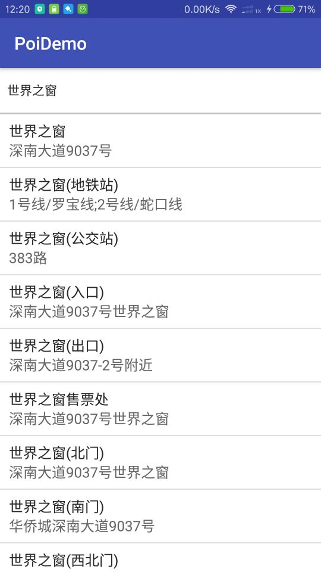

前言
由于项目中需要实现搜索附近位置作为收获地址，所以采用了高德地图的关键字检索POI来实现。官方Demo看了很复杂，估计很多人都不想看。但是看了我写的Demo你就会觉得So Easy啦！
先上效果图：

实现
高德提供了千万级别的 POI（Point of Interest，兴趣点）。在地图表达中，一个 POI 可代表一栋大厦、一家商铺、一处景点等等。通过POI搜索，完成找餐馆、找景点、找厕所等等的功能。地图 SDK 的搜索功能提供多种获取 POI 数据的接口，下面说的是根据关键字检索POI
要实现关键字搜索POI，当然要先集成高德地图到你的项目中去：
集成高德地图见我的另一边文章：Android项目实战(一)——高德地图集成
下面来看实现关键字搜索POI的具体代码：
（1）创建activity_poi_keyword_search.xml布局文件，如下：
<?xml version="1.0" encoding="utf-8"?>
<LinearLayout
xmlns:android="http://schemas.android.com/apk/res/android"
android:layout_width="match_parent"
android:layout_height="match_parent"
android:orientation="vertical">
<EditText
android:id="@+id/et_keyword"
android:layout_width="match_parent"
android:layout_height="50dp"
android:background="@color/white"
android:hint="请输入地址关键字搜索"
android:paddingLeft="8dp"
android:textColor="@color/deep_black"
android:textSize="14sp"
/>
<View
android:layout_width="match_parent"
android:layout_height="1dp"
android:background="@color/line_color"/>
<android.support.v7.widget.RecyclerView
android:id="@+id/recyclerView"
android:layout_width="match_parent"
android:layout_height="match_parent">
</android.support.v7.widget.RecyclerView>
</LinearLayout>（2）创建recyclerview的item布局item_poi_keyword_search.xml,如下：
<?xml version="1.0" encoding="utf-8"?>
<LinearLayout
android:id="@+id/ll_item_layout"
xmlns:android="http://schemas.android.com/apk/res/android"
android:layout_width="fill_parent"
android:layout_height="wrap_content"
android:background="@color/white"
android:orientation="vertical"
>
<View
android:layout_width="match_parent"
android:layout_height="0.5dp"
android:background="@color/line_color"/>
<LinearLayout
xmlns:android="http://schemas.android.com/apk/res/android"
android:layout_width="fill_parent"
android:layout_height="wrap_content"
android:orientation="vertical"
android:paddingBottom="8dp"
android:paddingLeft="10dp"
android:paddingRight="10dp"
android:paddingTop="8dp">
<TextView
android:id="@+id/tv_detailAddress"
android:layout_width="wrap_content"
android:layout_height="wrap_content"
android:layout_gravity="center_vertical"
android:text="世界之窗"
android:textColor="@color/deep_black"
android:textSize="16sp"/>
<TextView
android:id="@+id/tv_content"
android:layout_width="wrap_content"
android:layout_height="wrap_content"
android:layout_gravity="center_vertical"
android:text="1号线"
android:textColor="@color/shallow_black"
android:textSize="16sp"/>
</LinearLayout>
</LinearLayout>（3）创建实体类PoiAddressBean，如下：
public class PoiAddressBean implements Serializable {
private String longitude;//经度
private String latitude;//纬度
private String text;//信息内容
public String detailAddress;//详细地址 (搜索的关键字)
public String province;//省
public String city;//城市
public String district;//区域(宝安区)
public PoiAddressBean(String lon, String lat, String detailAddress, String text, String province, String city, String district){
this.longitude = lon;
this.latitude = lat;
this.text = text;
this.detailAddress = detailAddress;
this.province = province;
this.city = city;
this.district = district;
}
public String getLongitude() {
return longitude;
}
public String getLatitude() {
return latitude;
}
public String getText() {
return text;
}
public String getDetailAddress() {
return detailAddress;
}
public String getProvince() {
return province;
}
public String getCity() {
return city;
}
public String getDistrict() {
return district;
}
}
（4）创建适配器PoiKeywordSearchAdapter，如下：
public class PoiKeywordSearchAdapter extends RecyclerView.Adapter<PoiKeywordSearchAdapter.MyViewHolder> {
List<PoiAddressBean> poiAddressBean;
Context mContext;
public PoiKeywordSearchAdapter(Context context, List<PoiAddressBean> poiAddressBean) {
this.poiAddressBean = poiAddressBean;
this.mContext = context;
}
@Override
public MyViewHolder onCreateViewHolder(ViewGroup parent, int viewType) {
View view;
view = LayoutInflater.from(mContext).inflate(R.layout.item_poi_keyword_search, parent, false);
return new MyViewHolder(view);
}
@Override
public void onBindViewHolder(MyViewHolder holder, int position) {
final PoiAddressBean poiAddressBean = this.poiAddressBean.get(position);
holder.tv_detailAddress.setText(poiAddressBean.getDetailAddress());
holder.tv_content.setText(poiAddressBean.getText());
holder.ll_item_layout.setOnClickListener(new View.OnClickListener() {
@Override
public void onClick(View view) {
((PoiKeywordSearchActivity)mContext).setDetailAddress(poiAddressBean.getDetailAddress());
}
});
}
@Override
public int getItemCount() {
if (poiAddressBean != null) {
return poiAddressBean.size();
} else {
return 0;
}
}
class MyViewHolder extends RecyclerView.ViewHolder {
TextView tv_content;
TextView tv_detailAddress;
LinearLayout ll_item_layout;
public MyViewHolder(View itemView) {
super(itemView);
tv_detailAddress = (TextView) itemView.findViewById(R.id.tv_detailAddress);
tv_content = (TextView) itemView.findViewById(R.id.tv_content);
ll_item_layout = (LinearLayout) itemView.findViewById(R.id.ll_item_layout);
}
}
}
（5）创建搜索界面类PoiKeywordSearchActivity （主要代码都在这里），如下：
public class PoiKeywordSearchActivity extends AppCompatActivity implements PoiSearch.OnPoiSearchListener {
private RecyclerView mRecyclerView;
private EditText mEt_keyword;
private String keyWord = "";// 要输入的poi搜索关键字
private PoiResult poiResult; // poi返回的结果
private int currentPage = 0;// 当前页面，从0开始计数
private PoiSearch.Query query;// Poi查询条件类
private PoiSearch poiSearch;// POI搜索
@Override
protected void onCreate(Bundle savedInstanceState) {
super.onCreate(savedInstanceState);
setContentView(R.layout.activity_poi_keyword_search);
initView();
initListener();
initData();
}
private void initView() {
mRecyclerView = (RecyclerView) findViewById(R.id.recyclerView);
mEt_keyword = (EditText) findViewById(R.id.et_keyword);
}
private void initListener() {
mEt_keyword.addTextChangedListener(new TextWatcher() {
@Override
public void beforeTextChanged(CharSequence charSequence, int i, int i1, int i2) {
}
@Override
public void onTextChanged(CharSequence charSequence, int i, int i1, int i2) {
keyWord = String.valueOf(charSequence);
if ("".equals(keyWord)) {
ToastUtil.show(PoiKeywordSearchActivity.this,"请输入搜索关键字");
return;
} else {
doSearchQuery();
}
}
@Override
public void afterTextChanged(Editable editable) {
}
});
}
/**
* 开始进行poi搜索
*/
protected void doSearchQuery() {
currentPage = 0;
//不输入城市名称有些地方搜索不到
query = new PoiSearch.Query(keyWord, "", "深圳");// 第一个参数表示搜索字符串，第二个参数表示poi搜索类型，第三个参数表示poi搜索区域（空字符串代表全国）
//这里没有做分页加载了,默认给50条数据
query.setPageSize(50);// 设置每页最多返回多少条poiitem
query.setPageNum(currentPage);// 设置查第一页
poiSearch = new PoiSearch(this, query);
poiSearch.setOnPoiSearchListener(this);
poiSearch.searchPOIAsyn();
}
private void initData() {
mRecyclerView.setLayoutManager(new LinearLayoutManager(this));
}
/**
* POI信息查询回调方法
*/
@Override
public void onPoiSearched(PoiResult result, int rCode) {
if (rCode == AMapException.CODE_AMAP_SUCCESS) {
if (result != null && result.getQuery() != null) { // 搜索poi的结果
if (result.getQuery().equals(query)) { // 是否是同一条
poiResult = result;
ArrayList<PoiAddressBean> data = new ArrayList<PoiAddressBean>();//自己创建的数据集合
// 取得搜索到的poiitems有多少页
List<PoiItem> poiItems = poiResult.getPois();// 取得第一页的poiitem数据，页数从数字0开始
List<SuggestionCity> suggestionCities = poiResult
.getSearchSuggestionCitys();// 当搜索不到poiitem数据时，会返回含有搜索关键字的城市信息
for(PoiItem item : poiItems){
//获取经纬度对象
LatLonPoint llp = item.getLatLonPoint();
double lon = llp.getLongitude();
double lat = llp.getLatitude();
String title = item.getTitle();
String text = item.getSnippet();
String provinceName = item.getProvinceName();
String cityName = item.getCityName();
String adName = item.getAdName();
data.add(new PoiAddressBean(String.valueOf(lon), String.valueOf(lat), title, text,provinceName,
cityName,adName));
}
PoiKeywordSearchAdapter adapter = new PoiKeywordSearchAdapter(PoiKeywordSearchActivity.this,data);
mRecyclerView.setAdapter(adapter);
}
} else {
ToastUtil.show(PoiKeywordSearchActivity.this,
getString(R.string.no_result));
}
} else {
ToastUtil.showerror(this, rCode);
}
}
/**
* POI信息查询回调方法
*/
@Override
public void onPoiItemSearched(PoiItem item, int rCode) {
// TODO Auto-generated method stub
}
/**
* 设置详情地址
* @param detailAddress
*/
public void setDetailAddress(String detailAddress) {
mEt_keyword.setText(detailAddress);
}
}
（6）最后附上官方Demo中的吐司工具类ToastUtil，如下：
public class ToastUtil {
public static void show(Context context, String info) {
Toast.makeText(context, info, Toast.LENGTH_LONG).show();
}
public static void show(Context context, int info) {
Toast.makeText(context, info, Toast.LENGTH_LONG).show();
}
public static void showerror(Context context, int rCode){
try {
switch (rCode) {
//服务错误码
case 1001:
throw new AMapException(AMapException.AMAP_SIGNATURE_ERROR);
case 1002:
throw new AMapException(AMapException.AMAP_INVALID_USER_KEY);
case 1003:
throw new AMapException(AMapException.AMAP_SERVICE_NOT_AVAILBALE);
case 1004:
throw new AMapException(AMapException.AMAP_DAILY_QUERY_OVER_LIMIT);
case 1005:
throw new AMapException(AMapException.AMAP_ACCESS_TOO_FREQUENT);
case 1006:
throw new AMapException(AMapException.AMAP_INVALID_USER_IP);
case 1007:
throw new AMapException(AMapException.AMAP_INVALID_USER_DOMAIN);
case 1008:
throw new AMapException(AMapException.AMAP_INVALID_USER_SCODE);
case 1009:
throw new AMapException(AMapException.AMAP_USERKEY_PLAT_NOMATCH);
case 1010:
throw new AMapException(AMapException.AMAP_IP_QUERY_OVER_LIMIT);
case 1011:
throw new AMapException(AMapException.AMAP_NOT_SUPPORT_HTTPS);
case 1012:
throw new AMapException(AMapException.AMAP_INSUFFICIENT_PRIVILEGES);
case 1013:
throw new AMapException(AMapException.AMAP_USER_KEY_RECYCLED);
case 1100:
throw new AMapException(AMapException.AMAP_ENGINE_RESPONSE_ERROR);
case 1101:
throw new AMapException(AMapException.AMAP_ENGINE_RESPONSE_DATA_ERROR);
case 1102:
throw new AMapException(AMapException.AMAP_ENGINE_CONNECT_TIMEOUT);
case 1103:
throw new AMapException(AMapException.AMAP_ENGINE_RETURN_TIMEOUT);
case 1200:
throw new AMapException(AMapException.AMAP_SERVICE_INVALID_PARAMS);
case 1201:
throw new AMapException(AMapException.AMAP_SERVICE_MISSING_REQUIRED_PARAMS);
case 1202:
throw new AMapException(AMapException.AMAP_SERVICE_ILLEGAL_REQUEST);
case 1203:
throw new AMapException(AMapException.AMAP_SERVICE_UNKNOWN_ERROR);
//sdk返回错误
case 1800:
throw new AMapException(AMapException.AMAP_CLIENT_ERRORCODE_MISSSING);
case 1801:
throw new AMapException(AMapException.AMAP_CLIENT_ERROR_PROTOCOL);
case 1802:
throw new AMapException(AMapException.AMAP_CLIENT_SOCKET_TIMEOUT_EXCEPTION);
case 1803:
throw new AMapException(AMapException.AMAP_CLIENT_URL_EXCEPTION);
case 1804:
throw new AMapException(AMapException.AMAP_CLIENT_UNKNOWHOST_EXCEPTION);
case 1806:
throw new AMapException(AMapException.AMAP_CLIENT_NETWORK_EXCEPTION);
case 1900:
throw new AMapException(AMapException.AMAP_CLIENT_UNKNOWN_ERROR);
case 1901:
throw new AMapException(AMapException.AMAP_CLIENT_INVALID_PARAMETER);
case 1902:
throw new AMapException(AMapException.AMAP_CLIENT_IO_EXCEPTION);
case 1903:
throw new AMapException(AMapException.AMAP_CLIENT_NULLPOINT_EXCEPTION);
//云图和附近错误码
case 2000:
throw new AMapException(AMapException.AMAP_SERVICE_TABLEID_NOT_EXIST);
case 2001:
throw new AMapException(AMapException.AMAP_ID_NOT_EXIST);
case 2002:
throw new AMapException(AMapException.AMAP_SERVICE_MAINTENANCE);
case 2003:
throw new AMapException(AMapException.AMAP_ENGINE_TABLEID_NOT_EXIST);
case 2100:
throw new AMapException(AMapException.AMAP_NEARBY_INVALID_USERID);
case 2101:
throw new AMapException(AMapException.AMAP_NEARBY_KEY_NOT_BIND);
case 2200:
throw new AMapException(AMapException.AMAP_CLIENT_UPLOADAUTO_STARTED_ERROR);
case 2201:
throw new AMapException(AMapException.AMAP_CLIENT_USERID_ILLEGAL);
case 2202:
throw new AMapException(AMapException.AMAP_CLIENT_NEARBY_NULL_RESULT);
case 2203:
throw new AMapException(AMapException.AMAP_CLIENT_UPLOAD_TOO_FREQUENT);
case 2204:
throw new AMapException(AMapException.AMAP_CLIENT_UPLOAD_LOCATION_ERROR);
//路径规划
case 3000:
throw new AMapException(AMapException.AMAP_ROUTE_OUT_OF_SERVICE);
case 3001:
throw new AMapException(AMapException.AMAP_ROUTE_NO_ROADS_NEARBY);
case 3002:
throw new AMapException(AMapException.AMAP_ROUTE_FAIL);
case 3003:
throw new AMapException(AMapException.AMAP_OVER_DIRECTION_RANGE);
//短传分享
case 4000:
throw new AMapException(AMapException.AMAP_SHARE_LICENSE_IS_EXPIRED);
case 4001:
throw new AMapException(AMapException.AMAP_SHARE_FAILURE);
default:
Toast.makeText(context,"查询失败："+rCode , Toast.LENGTH_LONG).show();
logError("查询失败", rCode);
break;
}
} catch (Exception e) {
Toast.makeText(context, e.getMessage(), Toast.LENGTH_LONG).show();
logError(e.getMessage(), rCode);
}
}
private static void logError(String info, int errorCode) {
print(LINE);//start
print(" 错误信息 ");
print(LINE);//title
print(info);
print("错误码: " + errorCode);
print(" ");
print("如果需要更多信息，请根据错误码到以下地址进行查询");
print(" http://lbs.amap.com/api/android-sdk/guide/map-tools/error-code/");
print("如若仍无法解决问题，请将全部log信息提交到工单系统，多谢合作");
print(LINE);//end
}
//log
public static final String TAG = "AMAP_ERROR";
static final String LINE_CHAR="=";
static final String BOARD_CHAR="|";
static final int LENGTH = 80;
static String LINE;
static{
StringBuilder sb = new StringBuilder();
for(int i = 0;i<LENGTH;i++){
sb .append(LINE_CHAR);
}
LINE = sb.toString();
}
private static void printLog(String s){
if(s.length()<LENGTH-2){
StringBuilder sb = new StringBuilder();
sb.append(BOARD_CHAR).append(s);
for(int i = 0 ;i <LENGTH-2-s.length();i++){
sb.append(" ");
}
sb.append(BOARD_CHAR);
print(sb.toString());
}else{
String line = s.substring(0,LENGTH-2);
print(BOARD_CHAR+line+BOARD_CHAR);
printLog(s.substring(LENGTH-2));
}
}
private static void print(String s) {
Log.i(TAG,s);
}
}
大功告成！利用高德地图关键字检索POI就是这么简单！
源码地址：https://github.com/wildma/PoiDemo 如果对你有帮助star支持下哈~
注意：下载后直接运行会报“用户MD5安全码未通过”，因为该Demo用的是我自己在高德平台申请的KEY,
如果真的想要在我的Demo上测试你的Key,则需要替换清单文件中的key为你的。并且将项目的包名改为你申请key时的包名。